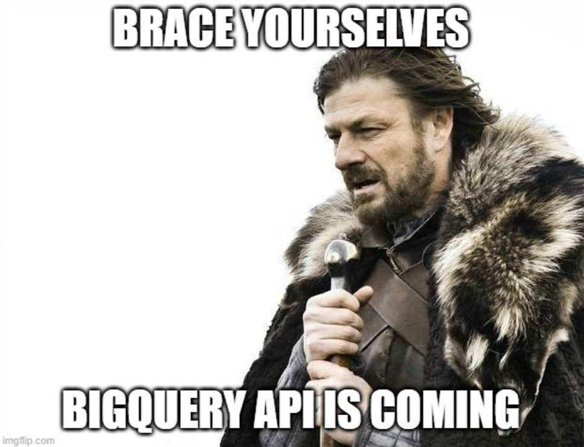

Insights de negócio com SQL - Resolvendo 5 questões
We often end up thinking about SQL only for queries in related databases. In reality, this language is capable of doing much more; the important thing is to always get the most out of it.
In this post, we will answer some business questions about the Olist database, a Brazilian e-commerce platform.
The tools used were:
- SQL, SQLite.
- Jupyter Notebook.
Spotify - Data Visualization with Power BI
Did you know that you can check your most listened to songs and artists at any time? Just request your account details. They give you up to 30 days to submit them. I made this dashboard showing some information about my account.
Period analyzed: Jan-2021 a Sep-2021
The tools used were:

How to upload Pandas dataframes to BigQuery using API?
We already know that Pandas is a fantastic and very useful Python library for manipulating and exploring large data sets. However, the goal of this post is to briefly go through Pandas and teach you how to synchronize CSV data in the pandas-gbq module with BigQuery.
The tools used were:
- Python, Jupyter Notebook.
- Pandas.
- BigQuery API.
Airbnb California - Visualization with Power BI
The analysis below aims to provide a brief summary of the prices and distribution of properties for rent on the Airbnb platform in 8 California counties.
The data was collected through a python script using the 'Get the Data' website.
The tools used were:
- Power BI, Dax.
- Python, web scraping.